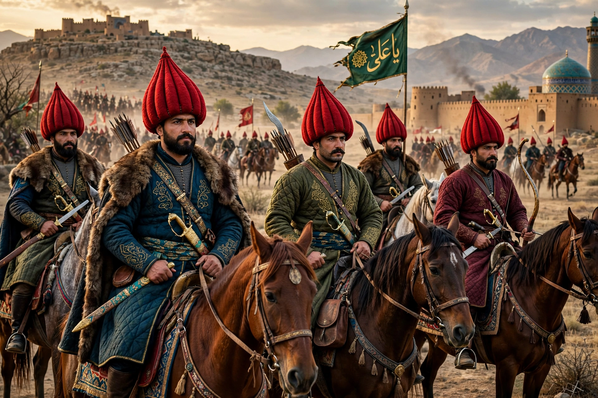

The Qizilbash (Turkish Kızılbaş, "red heads") were a diverse array of mainly Turkmen Shi'a militant groups in Anatolia, Azerbaijan and Iran from the late 15th century, who helped found the Safavid dynasty and empire. Their name derives from their distinctive crimson twelve-gored cap, the taj-i Haydari, signifying the Twelve Imams.

The Qizilbash were devotees of the Safavid Sufi order of Ardabil. Under Sheikh Haydar they adopted the red cap; under his son Ismail I, crowned Shah in Tabriz in 1501, their tribal cavalry conquered Iran and imposed Twelver Shi'ism.
Qizilbash amirs dominated the early Safavid state as military aristocracy, often rivalling the Shah and Persian administrators. Shah Abbas I reduced their power by creating ghulam infantry and musketeer corps, balancing tribal influence.
In Turkey, "Kızılbaş" became associated (sometimes pejoratively) with Alevi communities. Qizilbash groups persisted in Afghanistan and elsewhere.